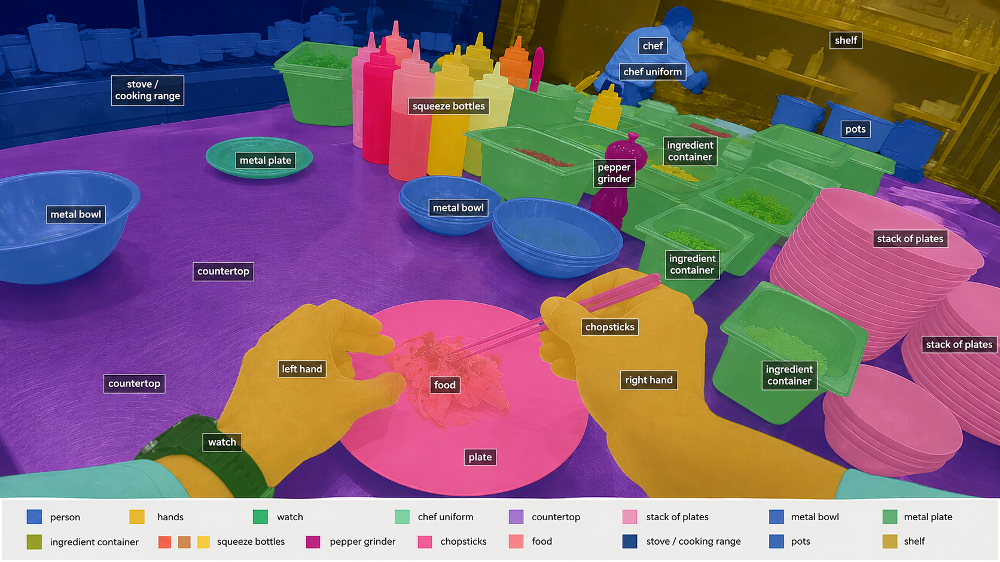

Data Products
Nero doesn't sell one dataset format.
It produces different layers of data depending on what a model needs — from raw synchronized sensor streams up to task-level behavioral annotations. Each layer below is available where the capture configuration and annotation program support it.
LAYER 01
Sensor Data
| Egocentric RGB | First-person monocular video aligned to timestamps and capture metadata. |
| Stereo RGB | Hardware-synchronized left/right image streams. |
| Audio | Time-aligned environmental or spoken audio where required. |
| IMU | Accelerometer and gyroscope streams synchronized to visual observations. |
| Depth | Stereo-derived, RGB-D or other depth representations where capture hardware supports it. |
| LiDAR | Timestamped point clouds for programs using LiDAR-equipped capture rigs. |
| Multi-view | Synchronized video from multiple calibrated cameras. |
| Calibration | Intrinsics, extrinsics, distortion parameters and coordinate-frame metadata. |
LAYER 02
Perception Annotations
Panoptic segmentation creates one unified pixel-level representation of a scene, covering both countable object instances (things) and background or material classes (stuff).
Object Detection
class_id, bounding_box, frame_id, confidence, track_id — for objects such as tools, containers, shelving, packages, food items and components.
Semantic Segmentation
Every pixel classified by what it represents: floor, wall, bench, shelving, human, machinery.
Instance Segmentation
Individual objects receive separate pixel masks — cup_001, cup_002, cup_003 — instead of one shared class mask.
Panoptic Segmentation
Semantic and instance understanding combined into one coherent scene representation, covering both things and stuff.
Optical Flow
Per-pixel motion vectors between frames.
Depth / Disparity
For stereo datasets, rectified pairs plus derived depth where specified.
Camera Trajectory
Position and orientation over time, where recoverable to spec.
6D Object Pose
Position and orientation of a tracked object, for supported programs.
EXAMPLE — ANNOTATED FRAME

LAYER 03
Spatial & Temporal Understanding
| Object Tracking | Persistent IDs across time — cup_014 at frame 1042 remains cup_014 at frame 1187. |
| Hand Tracking / Pose | 2D hand boxes, 2D or 3D keypoints, left/right identity, contact state and grasp state, depending on specification. |
| Hand-Object Interaction | Structured events describing actor, action, object and interaction time window. |
| Object State Changes | closed → open, whole → cut, empty → filled, unassembled → assembled, dirty → clean, off → on. |
EXAMPLE — HAND-OBJECT INTERACTION
actor: right_hand action: grasp object: screwdriver_04 start_time: 21.43 end_time: 22.07
LAYER 04
Task & Behavior Annotations
Datasets can be structured around episodes: a bounded task performed by one worker, broken into timestamped segments, each carrying its own verb, object, hand and outcome.
TASK
Restock beverage refrigerator
EPISODE: warehouse_024_worker_07_2027-04-15_00184
- 00:00–00:04 approach refrigerator
- 00:04–00:06 open door
- 00:06–00:11 pick up bottle crate
- 00:11–00:23 place bottles onto shelf
- 00:23–00:25 close door
Nero can also support natural-language task descriptions, step and subtask hierarchies, narrations, success/failure labels, safety events, interaction intent, affordance labels and long-horizon task graphs, where the program specification calls for them.
Delivery
Delivered into your stack, not ours.
Nero datasets can be packaged around a client's existing training and ingestion architecture rather than requiring a proprietary consumption format.
Video
MP4 or other agreed encoded streams, frame sequences where required, rectified stereo streams, original/raw capture where contracted.
Annotation
JSON, JSONL, COCO-style structures, ASAM OpenLABEL, client-defined schemas.
Robotics / Multimodal Logs
MCAP, ROS-compatible message structures, Protobuf, client-defined message schemas.
Tabular Metadata
Parquet, CSV, JSONL.
Robot-Learning Compatibility
Conversion into client-defined episodic structures, including RLDS- or LeRobot-compatible schemas, where the necessary observation, state and action fields exist.
Where the source data contains the required observation, state and action fields, datasets may also be converted into episodic structures compatible with robotics data frameworks such as RLDS or LeRobot. Ordinary human video does not inherently contain robot joint actions or proprioceptive state — those conversions apply only when the underlying capture and annotation program produced that information.